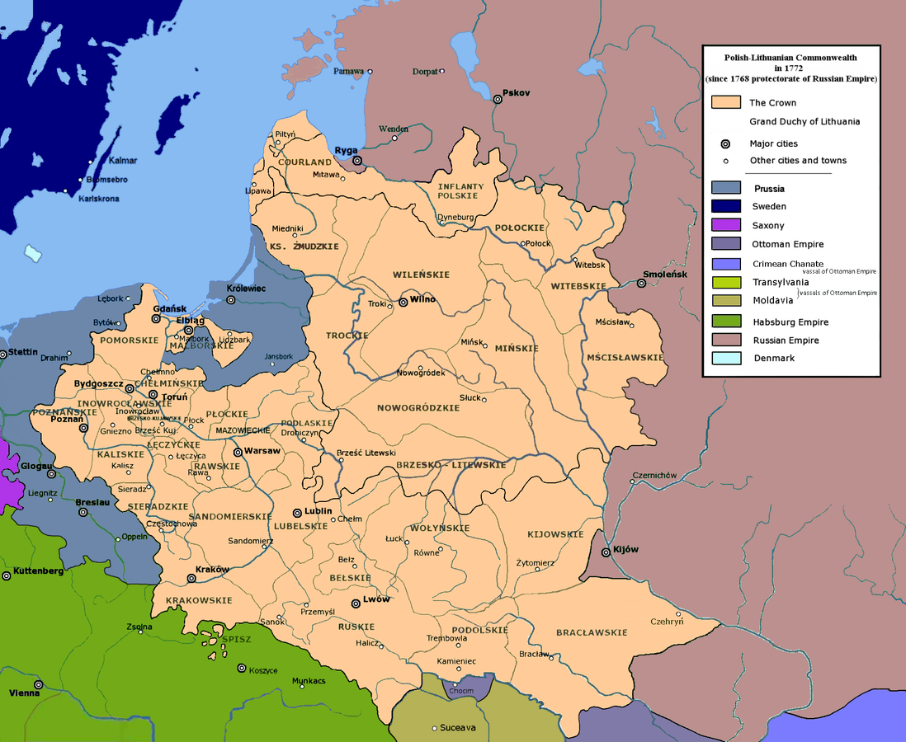
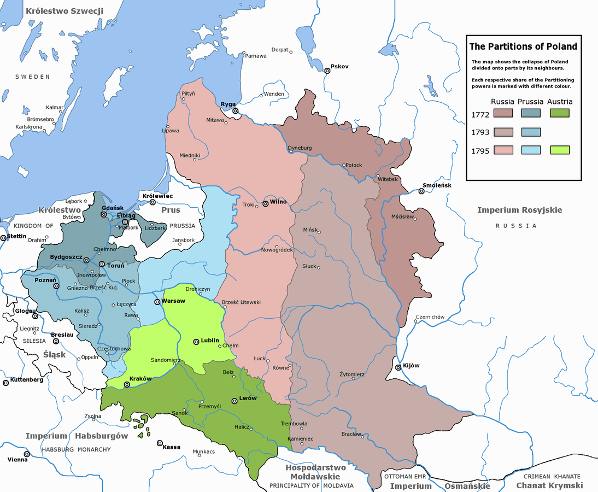
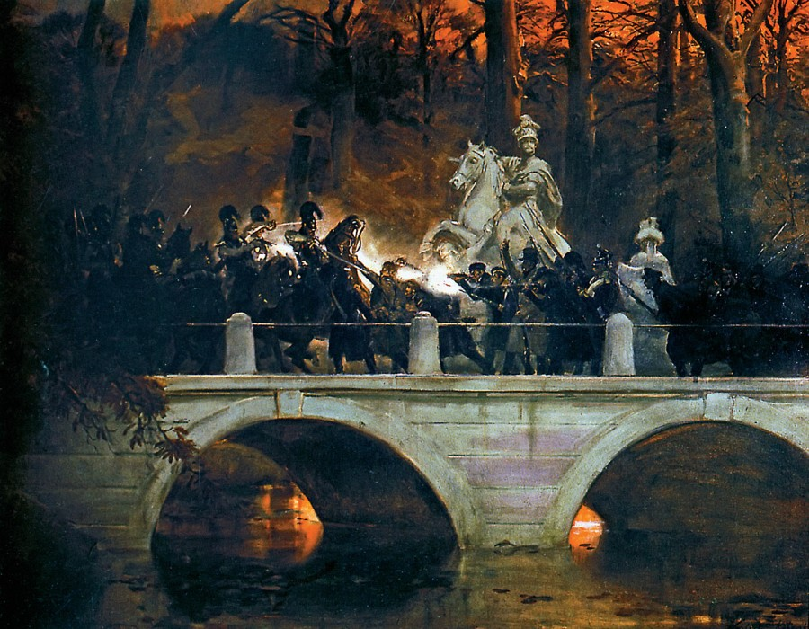
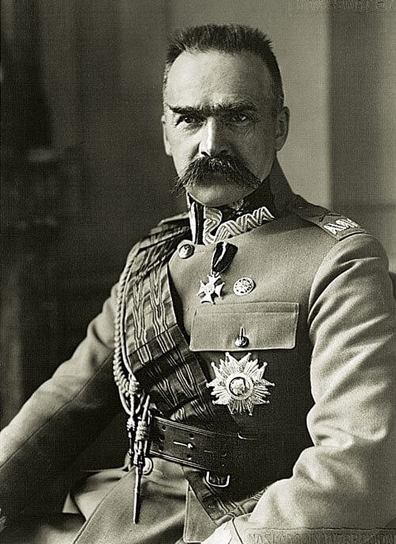
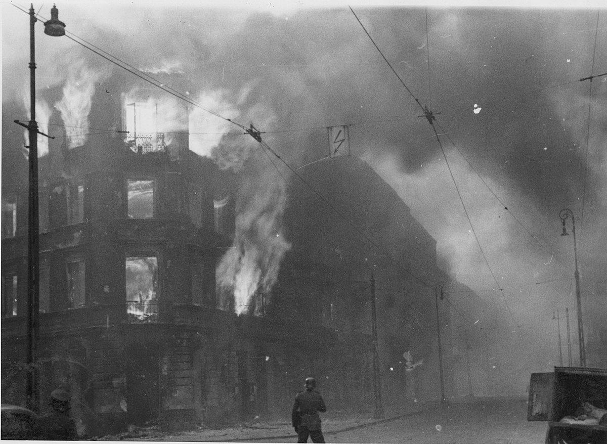
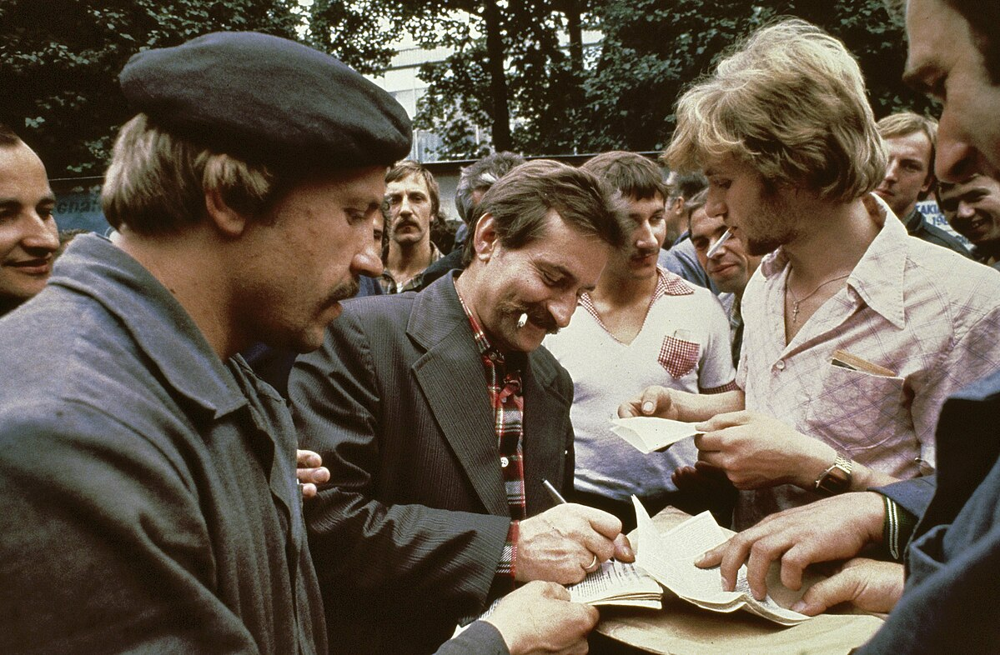
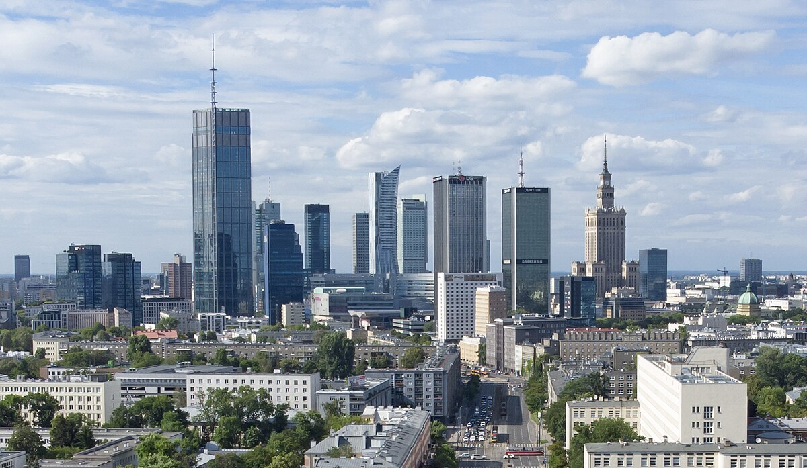

History
Learn all about the history of Poland and the history of lack thereof.
The Rise of Poland and the Piast Dynasty
Poland's history as a unified state began in 966 CE when Mieszko I, the first historically documented ruler, adopted Christianity, linking Poland to Western Europe and its cultural sphere. Under the Piast dynasty, Poland expanded its territories and established Kraków as a central hub. The Gniezno Congress in 1000 CE strengthened Poland’s ties to the Holy Roman Empire and Christendom.
The 12th and 13th centuries saw Poland fragmented into smaller duchies, weakening central authority and exposing the region to external threats like the devastating Mongol invasions. By the 14th century, Poland began to reunify under strong rulers like Władysław I Łokietek. His successor, Casimir III ("the Great"), reformed Poland with codified laws, improved infrastructure, and protections for Jewish communities. Casimir's reign solidified Poland’s position as a culturally and politically significant kingdom, laying the foundation for its later growth.
Coronation of Boleslaw I the Brave
The Polish-Lithuanian Commonwealth
The Union of Lublin in 1569 united Poland and Lithuania into the Polish-Lithuanian Commonwealth, one of Europe’s largest and most populous states. Characterised by its unique political system of an elected monarchy and "Golden Liberty," which granted extensive rights to the nobility, the Commonwealth flourished during the Renaissance as a centre of culture and tolerance. It welcomed religious minorities and was home to figures like Nicolaus Copernicus.
The Polish-Lithuanian Commonwealth (1569–1795)
However, the Commonwealth faced growing internal problems, such as a decentralised government and conflicts among the nobility. External pressures from neighbouring powers—Russia, Prussia, and Austria—further destabilised it. Reform attempts, such as the adoption of the Constitution of May 3, 1791 (Europe’s first modern constitution), came too late to prevent the Commonwealth's decline. The partitions of 1772, 1793, and 1795 led to the complete dissolution of the state, with its territories divided among its more powerful neighbours.
The Partitions of Poland
The partitions of Poland marked one of the darkest periods in the country’s history. Over three successive divisions in 1772, 1793, and 1795, the Polish-Lithuanian Commonwealth was wiped from the map. Austria, Prussia, and Russia annexed all Polish territory, exploiting the Commonwealth's internal weaknesses and geopolitical vulnerabilities. The partitions extinguished Polish sovereignty for over a century, but they also inspired a growing sense of national identity and a determination to reclaim independence.
The Partitions of Poland (1772–1795)
The Long 19th Century: Struggles Under Partition
During the 19th century, Poland remained divided under the control of Russia, Prussia, and Austria. Poles faced oppressive policies of Russification and Germanisation, which sought to erase their culture. Despite this, Polish identity endured through uprisings like the November Uprising (1830–1831) and the January Uprising (1863), though both were brutally suppressed. Romantic nationalism flourished, with writers like Adam Mickiewicz fostering a sense of unity and resistance. Many Polish elites emigrated during this time, forming a "Great Emigration" that advocated for Polish independence from abroad. Underground movements and cultural institutions preserved the Polish language, traditions, and history, ensuring that the dream of independence never faded.
November Uprising (1830-1831)
World War I and the Restoration of Independence
The collapse of empires during World War I created a unique opportunity for Poland to regain independence. After 123 years of partition, Poland was re-established as a sovereign state in 1918, an achievement formally recognised by the Treaty of Versailles. Under the leadership of Józef Piłsudski, the Second Polish Republic faced significant challenges, including territorial disputes (notably with the Soviet Union in the Polish-Soviet War of 1919–1921), economic instability, and the need to integrate lands from three different empires. Despite these difficulties, the interwar period was marked by cultural revival and efforts to rebuild Poland’s infrastructure and identity.
Józef Piłsudski, the goat
World War II and the Holocaust
A housing block burns during the suppression of the Warsaw ghetto uprising
World War II began with the German invasion of Poland on September 1, 1939, followed by the Soviet invasion from the east two weeks later. These aggressions were part of the Molotov-Ribbentrop Pact between Nazi Germany and the Soviet Union, which divided Poland between the two powers. Poland suffered immense losses during the war, including the near-total annihilation of its Jewish population in the Holocaust. Events like the Warsaw Ghetto Uprising (1943) and the Warsaw Uprising (1944) showcased Polish resistance but were met with brutal reprisals. The Katyn Massacre, in which the Soviets executed thousands of Polish officers, exemplified the suffering inflicted under both occupying forces. Despite the devastation, the Polish resistance was among the largest in Europe, maintaining underground education, governance, and military efforts to preserve national identity.
Post-War Communist Era and the Fall of Communism
After World War II, Poland fell under Soviet influence and became a communist state within the Eastern Bloc. The Polish People's Republic experienced economic struggles, political repression, and widespread censorship. Resistance to communist rule persisted, with workers’ strikes and protests highlighting public dissatisfaction. The Solidarity movement, founded in 1980 and led by Lech Wałęsa, played a pivotal role in challenging the communist regime. Solidarity united workers, intellectuals, and the Church, with support from figures like Pope John Paul II, who inspired hope and resilience among Poles. The movement culminated in the peaceful transition to democracy in 1989, making Poland a model for other nations in the Eastern Bloc.
Lech Wałęsa giving autographs
Modern Poland: Democracy and Integration
After the fall of communism, Poland embraced democratic reforms and transitioned to a market economy. It joined NATO in 1999 and the European Union in 2004, solidifying its place within Western political and economic structures. Today, Poland is a thriving democracy and one of the largest economies in Central Europe. While challenges remain—such as political polarisation and debates over judicial reforms—Poland’s modern trajectory highlights its resilience and ability to adapt in a rapidly changing world.
Current-day Warsaw skyline